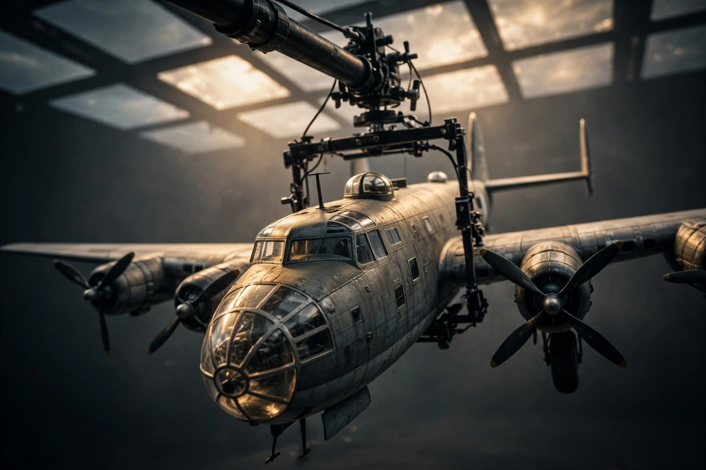
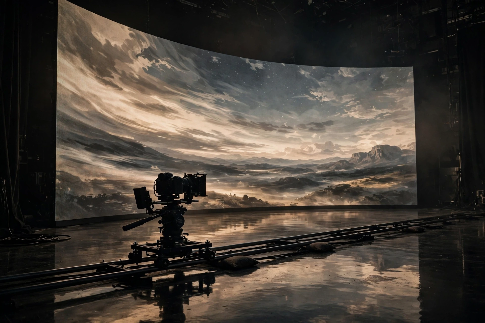

How does a production put a Lancaster bomber in the air without the budget of a feature-length visual-effects programme? Garden Studios spent one day in October 2026 finding out, in the company account of the test. The question sounds playful, and the method behind the answer is anything but casual.
The team behind A Memory Owed, an award-winning short now being adapted into a feature, had already filmed inside a real Lancaster at a retired wartime airfield. The feature needs a long night raid in flight, and the question on the table was narrow and practical: can a 1/32-scale miniature, flown on a permanent LED stage with real-time environments, carry those sequences in camera?
We read the test the way we read any good production experiment. Every claim is tied to a lens, a rig or a light that was actually in the room, and the conclusion is stated as plainly as the setup. That discipline is rarer than the technology, and the discipline is the part worth studying first.
01 · The test
The starting point matters. The production was not guessing about the aircraft from photographs alone. The short had already been filmed inside a real Lancaster at a retired wartime airfield, so the team knew the cockpit, the surfaces and the weight of the machine from direct experience. The miniature test began from knowledge, and the stage had to honour that knowledge under the camera.
The feature problem is specific: a long night raid in flight, sustained on screen, without the budget of a feature-length visual-effects programme. A single day on a permanent stage offered a way to price that problem honestly. Either the miniature held up in camera across dusk, dawn and night conditions, or the production learned early that another route would carry the sequences.

02 · How the day was built
The stagecraft rewards study. Garden virtual production team built dusk, dawn and night-raid environments in Unreal Engine, with flak effects in Niagara particle systems and Lancaster formations assembled in Blueprints, carrying adjustable propeller speeds and a touch of camera shake to keep the aircraft feeling weighted. Rather than moving the camera through a static world, the team animated the scene itself, with clouds and landscape streaming past the miniature, so the model could hold its performance while the sky did the travelling. Pre-rendered plates played through Pixera were tested alongside the real-time environments, so the production could compare both routes under the same conditions.
Light did as much work as geometry. The miniature sat close to camera on the studio MegaBoom rig, which allowed slow, heavy movements matched to a full-size bomber, while the LED ceiling panels came down low and acted as the sky itself, one large, changing light source washing across the upper surfaces, the cockpit glass and the nose blister, with reflections captured in camera instead of rebuilt in post. An ARRI Alexa Mini with Zeiss CP.2 lenses and a Laowa probe lens handled the photography, and a Mo-Sys StarTracker Max kept the background parallax honest as the camera moved.
A successful test, read properly, is a map of what the real shoot demands.
03 · The honest conclusion
The write-up earns trust by refusing to oversell the day. The test pointed to a larger miniature, roughly 1/5 scale, for the feature, higher-resolution environments, and dedicated motion control, with sequences split deliberately between in-camera work on the stage and green screen or visual effects where each method is stronger. A successful test, read properly, is a map of what the real shoot demands: the miniature works, the method works, and the scale of the commitment is now known rather than guessed. That is a production document, not a disappointment.

We value that honesty for a practical reason. A test that flatters the method sends the cost downstream, where a failed shot costs a shooting day. A test that names the gap, in scale, in resolution and in motion control, lets the production budget for the gap while choices are still cheap. The conclusion also protects the stage work that did succeed, because nobody has to defend a claim the day never made.
04 · Why the method travels
The pattern reaches well past one bomber. A bounded, one-day test on a real stage converts months of quoting, speculation and vendor claims into observed fact: what the lens sees, what the light does, where the method breaks. The Graduate Technical Intern years at MELS built an early education in exactly that discipline, and the Virtual Production skill on record at Ovia comes from the same school: prove the shot small, then scale the promise.
Montréal offers a close reference point. The MELS flagship LED volume, opened in February 2021, spans 10,000 square feet with a wall 65 feet by 20 feet, running Disguise and Unreal workflows for productions facing the same arithmetic. Stages of that class reward the same habit Garden Studios modelled: rehearse the hard sequence early, in the room, with the camera that will shoot the feature, and let the room answer.
05 · What to watch
Watch whether A Memory Owed carries the stage method into the feature at the larger scale, and how the split between in-camera and post-produced sequences lands on screen. Watch, too, the wider habit forming across the industry: test days published openly, with conclusions stated plainly, raise the standard for every studio claim. The volume rewards productions that treat the technology as a stage to be rehearsed on, not as a promise to be believed.
The cheapest day in any virtual production budget is the test day that prevents the expensive one. Garden Studios spent that day in public, with a 1/32-scale bomber, a ceiling of light and a conclusion written without flinching. We will be watching the feature, and we will be citing the test day as the model for how the claim was earned.
References
- Garden Studios — “Can You Fly a Lancaster on an LED Stage?”, October 2026: https://gardenstudios.io/news/can-you-fly-a-lancaster-on-an-led-stage/